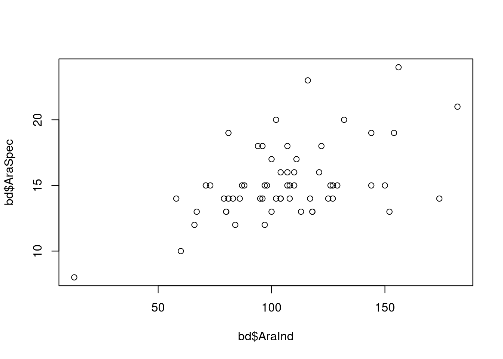
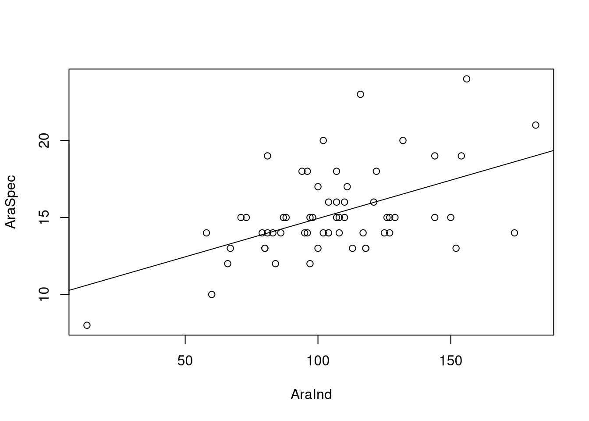
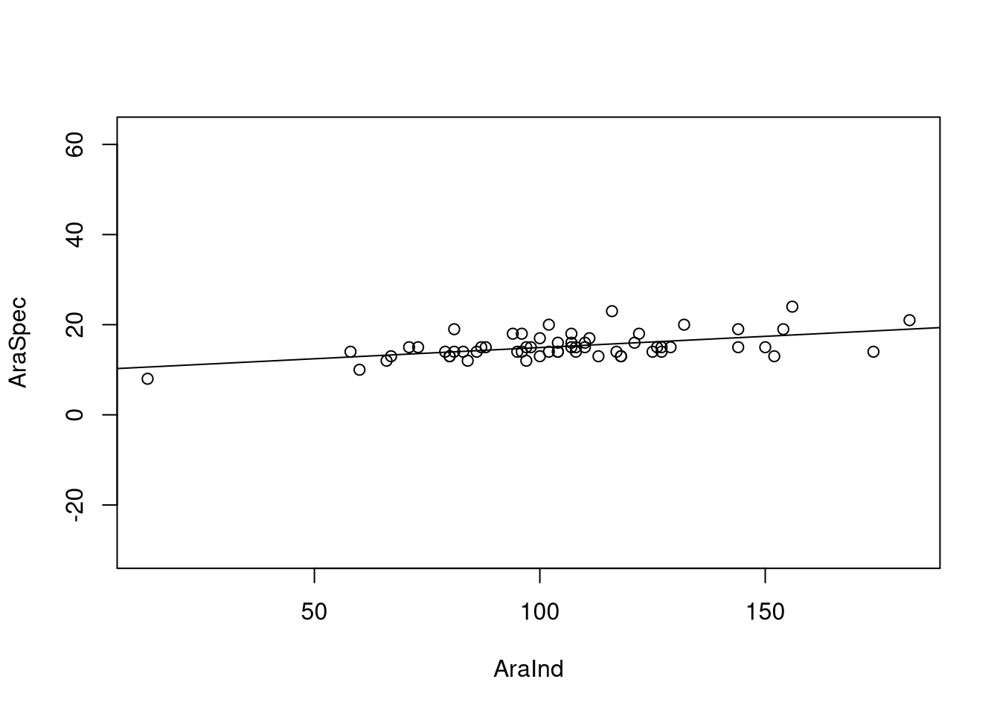

13 Species data
Many studies in landscape ecology deal with species data. Usually, these studies follow a plot based design to compare different environments and ecosystems in terms of abundances or species diversity. To practice everything we’ve learned so far and to go on further we want to have a look at another real world dataset. The species data below was collected by Michael Meyer. To find out more about the original goal of why this data was collected you can have a look at Meyer et al. (2019). While the statistical analysis of this paper is more advanced and not suited for this beginner course, the structure of the data is very easy and also allows the practice of more simple methods.
| plotcode | Croptype | AraInd | AraSpec | CaraInd | CaraSpec | IsoMyrInd | IsoMyrSpec | IsoDipInd | IsoDipSpec |
|---|---|---|---|---|---|---|---|---|---|
| 1 | WW | 111 | 17 | 191 | 15 | 6 | 2 | 6 | 2 |
| 4 | SM | 102 | 20 | 149 | 14 | 52 | 2 | 52 | 2 |
| 5 | WW | 154 | 19 | 96 | 11 | 16 | 4 | 15 | 3 |
| 10 | SM | 13 | 8 | 80 | 12 | 10 | 1 | 10 | 1 |
| 12 | ZR | 125 | 14 | 108 | 18 | 14 | 4 | 13 | 3 |
| 13 | WW | 107 | 15 | 178 | 18 | 23 | 3 | 23 | 3 |
| 16 | WW | 81 | 19 | 97 | 12 | 23 | 3 | 23 | 3 |
| 20 | WR | 132 | 20 | 327 | 12 | 8 | 3 | 7 | 2 |
| 24 | KE | 66 | 12 | 141 | 13 | 9 | 2 | 9 | 2 |
| 26 | WW | 100 | 17 | 136 | 17 | 4 | 2 | 4 | 2 |
The column names and crop types appear very cryptic at first sight. Here are some explanations:
GP = Grain Pea
SB = Sugar Beet
SM = Silage Maize
WR = Winter oilseed Rape
WW = Winter Wheat
Ara = Araneae
Cara = Carabidae
IsoDip = Isopoda and Diplopoda
IsoMyr = Isopoda and Myriapoda
Ind = Number of individual animals
Spec = Number of species
13.1 TASK: Crops vs. Species
How many different crop types where analysed in the study?
How many plots are there for each crop type?
Which plot had the most individual animals? (regardless of species)
Which plot was the most diverse?
What is the average number of Carabidaes on all the plots containing winter wheat?
What is the minimum number of species per crop type?
Visualize the number of Carabidaes per crop type.
Plot the number of Araneae species in relation to the number of individual Araneae.
If there are more individual Araneae on a plot, are there also more Araneae species?
13.2 Solution
Click for Answer
library(dplyr)
bd = read.csv("data/crop_species.csv")13.2.1 How many different crop types where analysed in the study?
length(unique(bd$Croptype))## [1] 513.2.2 How many plots are there for each crop type?
length(bd$plotcode[bd$Croptype == "KE"])## [1] 3length(bd$plotcode[bd$Croptype == "SM"])## [1] 9length(bd$plotcode[bd$Croptype == "WR"])## [1] 6length(bd$plotcode[bd$Croptype == "WW"])## [1] 33length(bd$plotcode[bd$Croptype == "ZR"])## [1] 9# for all croptypes at once
table(bd$Croptype)##
## KE SM WR WW ZR
## 3 9 6 33 9# dplyr
bd %>% count(Croptype)## Croptype n
## 1 KE 3
## 2 SM 9
## 3 WR 6
## 4 WW 33
## 5 ZR 913.2.3 Which plot had the most individual animals? (regardless of species)
# calculate the total individuals for each plot
bd$TotalInd = bd$AraInd + bd$CaraInd + bd$IsoMyrInd
# find out on which plotcode the total number is the maximum total number
bd$plotcode[bd$TotalInd == max(bd$TotalInd)]## [1] 30# dplyr pipeline
bd %>% mutate(TotalInd = AraInd + CaraInd + IsoMyrInd) %>%
filter(TotalInd == max(TotalInd)) %>%
select(plotcode)## plotcode
## 1 3013.2.4 Which plot was the most diverse?
bd$TotalSpec = bd$AraSpec + bd$CaraSpec + bd$IsoMyrSpec
bd$plotcode[bd$TotalSpec == max(bd$TotalSpec)]## [1] 98bd %>% mutate(TotalSpec = AraSpec + CaraSpec + IsoMyrSpec) %>%
filter(TotalSpec == max(TotalSpec)) %>%
select(plotcode, TotalSpec)## plotcode TotalSpec
## 1 98 4113.2.5 What is the average number of Carabidaes on all the plots containing winter wheat?
mean(bd$CaraInd[bd$Croptype == "WW"])## [1] 119.697bd %>% filter(Croptype == "WW") %>%
summarise(MeanCara = mean(CaraInd))## MeanCara
## 1 119.697bd %>% filter(Croptype == "WW") %>%
pull(CaraInd) %>%
mean()## [1] 119.69713.2.6 What is the minimum number of species per crop type?
# for one crop type
min(bd$TotalSpec[bd$Croptype == "WW"])## [1] 26bd %>% group_by(Croptype) %>%
summarise(MinSpec = min(TotalSpec))## # A tibble: 5 × 2
## Croptype MinSpec
## <chr> <int>
## 1 KE 27
## 2 SM 21
## 3 WR 24
## 4 WW 26
## 5 ZR 23# if we didn't compute total species before:
bd %>% group_by(Croptype) %>%
mutate(TotalSpec = AraSpec + CaraSpec + IsoMyrSpec) %>%
summarise(MinSpec = min(TotalSpec))## # A tibble: 5 × 2
## Croptype MinSpec
## <chr> <int>
## 1 KE 27
## 2 SM 21
## 3 WR 24
## 4 WW 26
## 5 ZR 2313.2.8 Plot the number of Araneae species in relation to the number of individual Araneae.
plot(bd$AraInd, bd$AraSpec)
13.2.9 If there are more individual Araneae on a plot, are there also more Araneae species?
# build a linear model
ara_model = lm(bd$AraSpec ~ bd$AraInd)
summary(ara_model)##
## Call:
## lm(formula = bd$AraSpec ~ bd$AraInd)
##
## Residuals:
## Min 1Q Median 3Q Max
## -4.6170 -1.4779 -0.2867 1.3864 7.2698
##
## Coefficients:
## Estimate Std. Error t value Pr(>|t|)
## (Intercept) 9.95648 1.18793 8.381 1.41e-11 ***
## bd$AraInd 0.04977 0.01084 4.593 2.40e-05 ***
## ---
## Signif. codes: 0 '***' 0.001 '**' 0.01 '*' 0.05 '.' 0.1 ' ' 1
##
## Residual standard error: 2.443 on 58 degrees of freedom
## Multiple R-squared: 0.2667, Adjusted R-squared: 0.2541
## F-statistic: 21.09 on 1 and 58 DF, p-value: 2.401e-05plot(AraSpec ~ AraInd, data = bd)
abline(ara_model)
plot(AraSpec ~ AraInd, data = bd, asp = 1)
abline(ara_model)